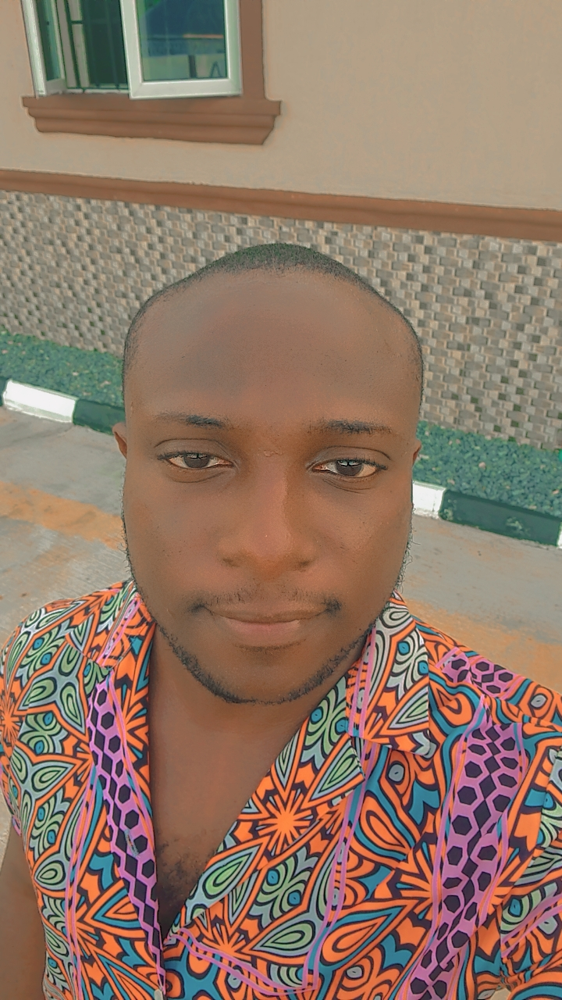

Ganiyu Ismail

Summary
I am a very hardworking individual who always strive for excellence.
i am someone who is always willing to learn and adapt to changes
Education
- Junior secondary school certificate - 2013
- Senior secondary school certificate - 2016
- West african examination council certificate - 2016
- Ordinary national diploma - 2022
- Higher national diploma - 2025
Work experience
-
Ayolass footwear - 2016 to 2019
- attended to customers
- source for and buy raw materials
- work on customers product
Skills
- Negotiation skill
- customer service
- microsoft word
- footwear making
Awards and Certification
- certificate of completion from ayolass footwear
Other